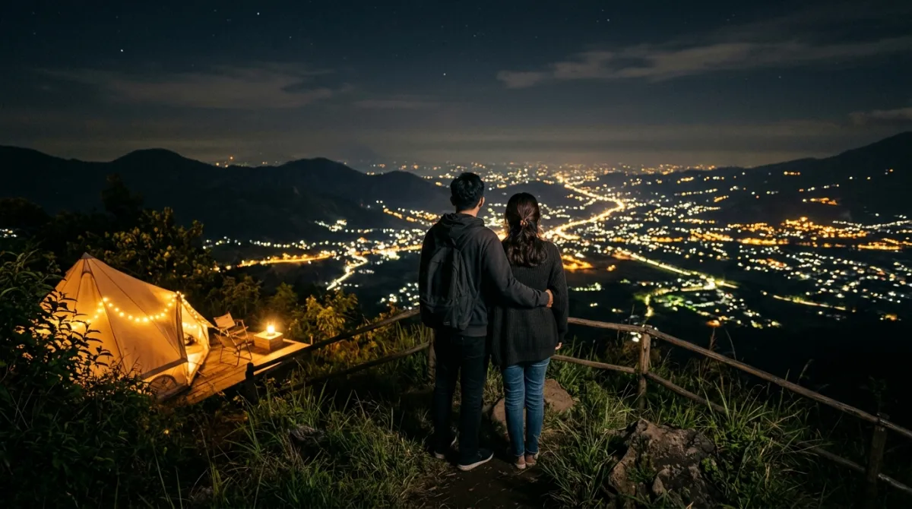

Melarikan diri sejenak dari rutinitas kerja dan nikmati romantisnya malam di Batu.
Melarikan diri sejenak dari rutinitas kerja dan nikmati romantisnya malam di Batu.
Kamu ngerasa nggak sih, kerjaan di kantor belakangan ini kayak nggak ada habisnya? Tiap hari lihat layar laptop, dengerin revisi dari atasan, sampai rasanya kepala mau pecah. Kalau terus-terusan begini, stres bakalan numpuk dan hubungan sama pasangan juga bisa kena imbasnya karena kita terlalu sibuk.
Bayangkan kalau kamu melewatkan masa-masa indah saat masih muda ini cuma buat kejar deadline. Rasanya sayang banget, kan? Nanti pas udah tua, masa iya kenangan kita cuma seputar kubikel kantor aja? Nah, sebelum nyesel karena kurang piknik, mending kita agendakan pelarian sejenak. Nggak perlu jauh-jauh, Jawa Timur punya surga kecil buat kita.
Bayangin nyeruput kopi hangat sambil meluk pasangan, diterangi gemerlap lampu kota dari ketinggian. Iya, kita ngomongin soal pengalaman camping view city light Batu. Ini bukan sekadar liburan biasa, tapi momen intimate buat nge-charge lagi energi kita berdua.
Kenapa Memilih Kota Batu untuk Pelarian Romantismu?
Memilih lokasi liburan itu kadang mirip banget sama milih partner kerja atau vendor buat proyek kantor. Kalau dari awal udah nggak sreg, dari awal sampai akhir bawaannya emosi terus. Buat kamu yang mencari suasana estetik dan tenang, Kota Batu adalah "kandidat" terbaik yang nggak akan mengecewakan ekspektasi. Bukan rahasia lagi kalau kawasan ini punya topografi pegunungan yang bikin udaranya otomatis sejuk, jauh berbeda dari udara pengap khas area perkotaan industri.
Udara Dingin yang Bikin Suasana Makin Intimate
Satu hal yang paling dicari dari sebuah kegiatan alam adalah suasananya. Di Batu, suhu malam hari bisa turun cukup drastis. Buat sebagian orang mungkin ini tantangan, tapi buat pasangan atau pengantin baru, ini adalah setting yang sempurna.
Kamu punya alasan valid buat merapatkan duduk di depan api unggun, berbagi selimut berdua, atau sekadar menikmati secangkir wedang jahe sambil deep talk. Berada di lingkungan baru yang sejuk terbukti bisa menurunkan tensi dan stres, bikin obrolan kamu sama pasangan jadi lebih berkualitas, nggak cuma sekadar nanya, "Hari ini makan apa?"

Momen mesra bersama pasangan akan terasa lebih spesial di tengah sejuknya udara pegunungan.Aksesibilitas Mudah, Nggak Bikin Cuti Tahunan Habis
Kadang kita pengen banget healing ke alam liar, tapi mikirin perjalanan yang harus membelah hutan dan jalanan rusak aja udah bikin lelah duluan. Waktu cuti yang cuma sisa dua hari jelas nggak cukup. Nah, camping view city light Batu menawarkan kemewahan alam dengan kemudahan akses.
Banyak titik kemah yang jalannya sudah beraspal mulus atau setidaknya aman dilewati kendaraan roda dua dan roda empat. Jadi, tenaga kamu nggak habis di jalan, dan begitu sampai, kamu masih punya energi penuh buat mendirikan tenda atau langsung bersantai menikmati momen estetis di bawah langit malam.
Rekomendasi Spot Camping View City Light Batu
Mencari spot kemah yang tepat itu ibarat mencari posisi duduk strategis pas meeting besar—salah pilih, kamu nggak bakal nyaman dan malah gagal fokus.
Supaya momen healing kamu nggak berubah jadi pusing, aku udah merangkum beberapa rekomendasi camping ground yang fasilitasnya terjamin, keamanannya dijaga, dan pastinya punya pemandangan gemerlap kota yang bikin mata nggak mau berkedip.
1. Batu Sunrise Camp: Nyaman, Intimate, dan Memanjakan Mata
Kalau kamu cari perpaduan antara nuansa private, fasilitas memadai, dan pemandangan luar biasa, tempat yang satu ini wajib masuk itinerary. Lokasinya berada di elevasi yang pas banget buat melihat lanskap Kota Batu dan Malang dari kejauhan.
Begitu malam tiba, jutaan lampu rumah dan jalanan di bawah sana terlihat seperti hamparan bintang yang jatuh ke bumi. Area berkemahnya juga ditata sedemikian rupa sehingga jarak antartenda tidak terlalu berdempetan.
Ini krusial banget buat kamu yang pengen dapet privasi lebih sama pasangan. Fasilitas toiletnya bersih dan airnya terjamin, sesuatu yang menurut pengalamanku sangat penting untuk menjaga mood pasangan agar tetap bahagia selama liburan di alam terbuka.
2. Area Gunung Banyak (Paragliding): Klasik tapi Tak Pernah Salah
Siapa yang nggak kenal dengan spot legendaris ini? Meskipun siang harinya terkenal sebagai lokasi paralayang, malam hari di Gunung Banyak bertransformasi menjadi area camping yang luar biasa romantis. Kelebihan utama dari tempat ini adalah view 180 derajat ke arah kota yang nyaris tanpa halangan pohon.
Kamu bisa membuka pintu tenda dan langsung disambut oleh lautan cahaya. Karena sudah dikelola cukup lama oleh pihak berwenang setempat, keamanannya sangat terjaga. Ada petugas yang berpatroli dan warung-warung kecil yang buka 24 jam.
Jadi, kalau tengah malam kamu atau pasangan tiba-tiba ngidam mie instan rebus atau kopi saset, kamu nggak perlu repot-repot menyalakan kompor portable.
3. Campervan Park Lereng Arjuno: Solusi Estetis Tanpa Ribet
Buat kamu yang mungkin merasa tidur di atas tanah langsung terlalu ekstrem, mencoba konsep campervan atau glamping di kawasan lereng Arjuno bisa jadi alternatif jalan tengah. Kamu bisa menyewa mobil yang sudah dimodifikasi seperti kamar berjalan, atau menyewa lahan khusus yang menyediakan deck kayu untuk tenda eksklusifmu.
Suasananya sangat kental dengan vibe anak muda masa kini yang mengedepankan estetika untuk kebutuhan dokumentasi. Membawa lampu gantung tumblr tambahan dan menyalakannya di sekitar tenda akan menambah siluet cantik untuk foto siluet kalian dengan latar belakang city light.
Persiapan Penting Agar Momen Healing Nggak Jadi Pusing
Liburan ke alam itu butuh perencanaan. Sama kayak ngerjain campaign di kantor; kalau eksekusinya modal nekat tanpa brief yang jelas, hasilnya pasti berantakan. Jangan sampai niat awal mau romantis-romantisan, malah berakhir dengan masuk angin berdua karena salah kostum atau tenda bocor.
Bawa Pakaian Hangat Berlapis (Layering)
Jangan pernah meremehkan angin malam di dataran tinggi. Membawa jaket tebal saja kadang tidak cukup. Terapkan teknik pakaian berlapis atau layering. Pakai base layer yang menyerap keringat, lalu tumpuk dengan sweater berbahan fleece, dan lapisi lagi dengan jaket windbreaker di bagian paling luar.
Teknik ini memastikan suhu tubuh tetap stabil. Jangan lupa bawa kaus kaki tebal dan kupluk. Percaya deh, ketika tubuh merasa hangat, menikmati camping view city light Batu akan terasa seratus kali lipat lebih magis dan nyaman.
Pilih Tenda yang Proper atau Pilih Glamping Saja
Kalau kamu punya peralatan camping sendiri, pastikan tendamu jenis double layer yang punya sirkulasi udara baik namun mampu menahan embun malam. Tenda single layer yang murah biasanya akan berembun di dalam saat pagi hari, membuat barang-barang dan kasur lipatmu basah. Kalau kamu malas repot menyusun frame tenda dan memukul pasak—terutama kalau kalian datang setelah jam kerja di hari Jumat—menyewa fasilitas glamping atau tenda yang sudah ready to use dari pengelola adalah investasi yang sepadan. Bayar sedikit lebih mahal untuk kenyamanan dan efisiensi waktu adalah prinsip work-smart yang juga berlaku saat liburan.
Bawa Perbekalan Praktis yang Menggugah Selera
Lupakan diet sejenak. Berada di cuaca dingin pasti akan membuat kalian lebih cepat lapar. Bawa makanan yang mudah dimasak tapi memberikan kesan spesial. Membawa grill pan kecil untuk memanggang irisan daging sapi tipis ala restoran All You Can Eat, lengkap dengan saus bulgogi dan daun selada, bisa jadi aktivitas makan malam yang sangat seru.
Proses memasak bersama di alam terbuka dengan alat sederhana ini sering kali menciptakan canda tawa yang merekatkan hubungan kalian, jauh dari distraksi notifikasi grup kerja.
Saatnya Membuat Keputusan Sebelum Terlambat
Pada akhirnya, siklus pekerjaan akan selalu berputar. Email dari klien, laporan bulanan, dan target-target perusahaan nggak akan pernah ada garis akhirnya. Tapi, waktu luang bareng orang tersayang di masa mudamu ini? Itu ada batasnya. Usia akan bertambah, dan tenaga untuk mengeksplorasi alam lambat laun akan menurun.
Jangan sampai kita menunda-nunda kebahagiaan kecil ini, lalu tiba-tiba tersadar bahwa kita terlalu sibuk mencari materi sampai lupa menciptakan memori yang berarti. Menyempatkan satu akhir pekan untuk menikmati camping view city light Batu bukan sekadar melarikan diri dari realitas, melainkan merawat kewarasan dan cinta yang sudah susah payah kamu bangun. Jadi, kosongkan jadwal weekend ini, tutup laptopmu, dan mulailah berkemas.
FAQ